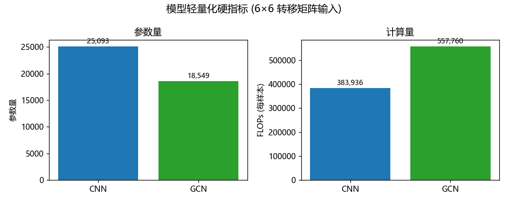
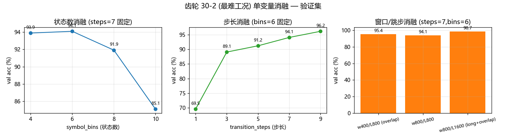
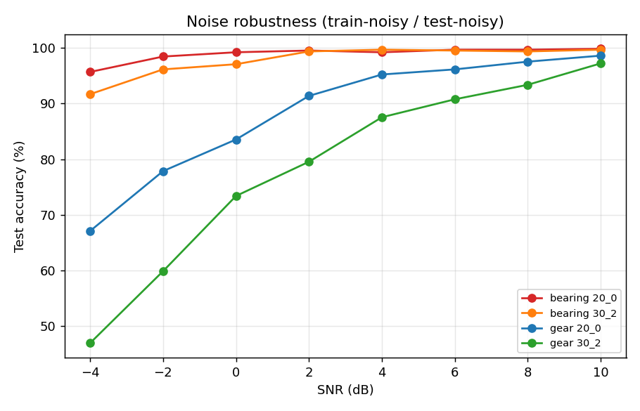
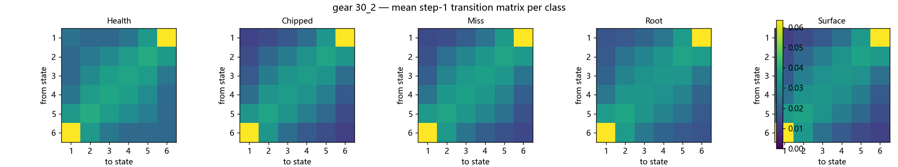
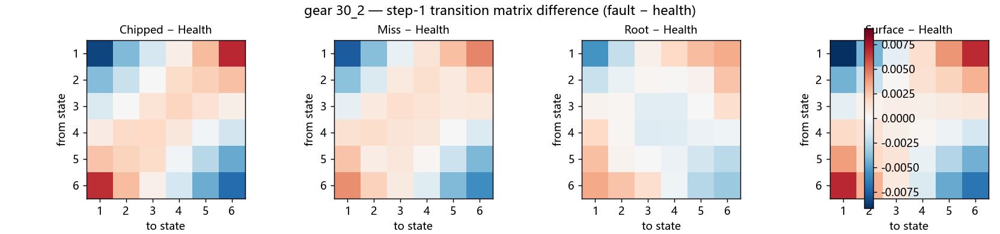
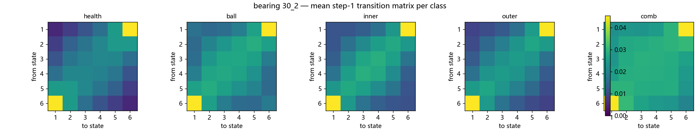
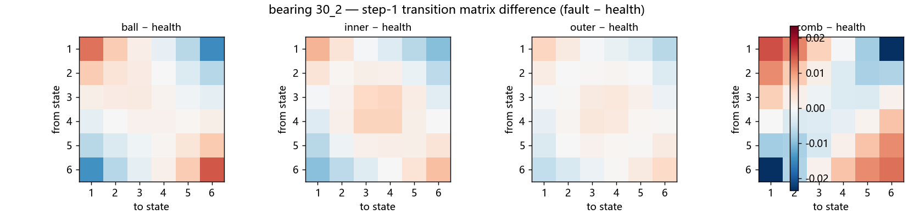

对应导师提出的七类补充数据，全部基于 SEU DDS 齿轮箱数据集、本方法（幅值符号化 → 多时间步转移矩阵 → CNN/GCN）实测整理。整理日期：2026-10-01。
模型输入统一为 6×6 转移矩阵、21 通道（3 振动方向 × 7 时间步），在 RTX 4060 Laptop GPU 上实测：
| 指标 | CNN | GCN |
|---|---|---|
| 参数量 | 25,093 | 18,549 |
| 模型大小（单精度） | 104 KB | 79 KB |
| 计算量（FLOPs/样本） | 383,936 | 557,760 |
| 单步训练耗时 | 1.5 ms | 3.3 ms |
| 推理吞吐量 | 3.7~5.3 万样本/秒 | 2.5 万样本/秒 |
| 单 batch 推理延迟 | 0.6~0.9 ms | 1.3 ms |
| 峰值显存占用 | 18.2 MB | 20.8 MB |
| 完整训练一轮（≈4600 样本） | 约 10~48 秒 | 同量级 |

| 任务 | 模型 | 工况 | val 均值 | val 标准差 |
|---|---|---|---|---|
| 轴承 | CNN | 20-0 | 1.0000 | 0.0000 |
| 轴承 | CNN | 30-2 | 1.0000 | 0.0000 |
| 轴承 | GCN | 20-0 | 1.0000 | 0.0000 |
| 轴承 | GCN | 30-2 | 1.0000 | 0.0000 |
| 齿轮 | CNN | 20-0 | 0.9928 | 0.0022 |
| 齿轮 | CNN | 30-2 | 0.9884 | 0.0017 |
| 齿轮 | GCN | 20-0 | 0.9942 | 0.0021 |
| 齿轮 | GCN | 30-2 | 0.9863 | 0.0035 |
结论：三种子标准差全部 ≤ 0.0035，结果对随机种子不敏感、可复现。
轴承任务各类几乎全部 1.0。齿轮的短板集中在 Miss（缺齿）与 Surface（齿面磨损）：
| 齿轮工况 | 类别 | 敏感性（召回） | 特异性 | 精确率 |
|---|---|---|---|---|
| 30-2 (CNN) | Health | 1.000 | 1.000 | 1.000 |
| Chipped | 1.000 | 1.000 | 1.000 | |
| Miss | 0.969 | 0.990 | 0.962 | |
| Root | 0.985 | 0.998 | 0.992 | |
| Surface | 0.954 | 0.989 | 0.954 | |
| 20-0 (CNN) | Miss | 1.000 | 0.994 | 0.977 |
| Surface | 1.000 | 1.000 | 1.000 |
协议：齿轮 5 类、20-0 与 30-2 两工况合并、80% 训练 / 20% 测试、SNR=10 dB 高斯噪声。
| 方法 | 协议 | 测试准确率 |
|---|---|---|
| 文献1 改进 Transformer | 同协议 | 99.4% |
| 本方法（CNN） | 同协议 | 96.5% |
两工况合并成同一 5 类是更难的跨工况任务；我们 96.5% 与文献1 的 99.4% 相差约 3 个百分点，但参数量差约 3 个数量级（2.5 万 vs 数百万）。
文献5 与我们一样做轴承 + 齿轮、分工况 4 个任务（G1=20-0、G2=30-2）。按 60% 训练 / 40% 测试复现：
| 任务 | 工况 | 本方法（60% 训练） | 文献5 报告值 |
|---|---|---|---|
| 轴承 | G1(20-0) | 99.92% | 99.4% |
| 轴承 | G2(30-2) | 100% | 99.6% |
| 齿轮 | G1(20-0) | 98.55% | 99.8% |
| 齿轮 | G2(30-2) | 96.18% | 99.4% |
轴承两项持平甚至略高；齿轮两项略低（96.2~98.6% vs 99.4~99.8%），差距 1~3 个百分点，属正常（60% 训练数据更少）。
| 状态数 | 4 | 6 | 8 | 10 |
|---|---|---|---|---|
| val 准确率 | 0.9388 | 0.9408 | 0.9191 | 0.8511 |
| 步长 | 1 | 3 | 5 | 7 | 9 |
|---|---|---|---|---|---|
| val 准确率 | 0.6954 | 0.8908 | 0.9122 | 0.9408 | 0.9618 |
| 窗口 | w400/L800(重叠) | w800/L800 | w800/L1600(长窗+重叠) |
|---|---|---|---|
| val 准确率 | 0.9536 | 0.9408 | 0.9867 |

采用与文献1 相同的「加噪训练 + 加噪测试」协议。
| SNR(dB) | 轴承 20-0 | 轴承 30-2 | 齿轮 20-0 | 齿轮 30-2 |
|---|---|---|---|---|
| −4 | 0.9569 | 0.9169 | 0.6708 | 0.4692 |
| −2 | 0.9846 | 0.9615 | 0.7785 | 0.5985 |
| 0 | 0.9923 | 0.9708 | 0.8354 | 0.7338 |
| +2 | 0.9954 | 0.9938 | 0.9138 | 0.7954 |
| +4 | 0.9923 | 0.9969 | 0.9523 | 0.8754 |
| +6 | 0.9969 | 0.9954 | 0.9615 | 0.9077 |
| +8 | 0.9969 | 0.9938 | 0.9754 | 0.9338 |
| +10 | 0.9985 | 0.9969 | 0.9862 | 0.9723 |

从模型实际输入的表征（21 通道 × 6×6 转移矩阵）直接计算：每类平均转移矩阵（步长 1）+ 类间差值热图（故障类 − 健康类）。




其余任务（20-0）的热图在 doc/figures/seu/interpret/ 下。数值矩阵见 teacher_extra/interpretability.json。
| # | 文献 | 数据子集 | 工况 | 划分/训练测试量 | 加噪 | 精确结果 |
|---|---|---|---|---|---|---|
| 1 | 改进 Transformer (Guan, ACM'23) | 齿轮 5 类 | 20-0+30-2 合并 | 80/20，5 折 | SNR=10 dB | 99.4% |
| 5 | MSRC+CBAM (Zhang, IIETA'26) | 轴承+齿轮 5 类 | G1/G2 分工况 | 未明（自采 80/10/10；CWRU 60%/30%） | 未披露 | 轴承 99.4~99.6%、齿轮 99.4~99.8% |
| 2 | ICEEMDAN+SE-ResNeXt50 (Gao, ApplSci'24) | 齿轮 5 类 | 20-0、30-2 | 随机抽样 | 先降噪，SNR −4~6 | 97.5%~100% |
| 3 | FE-MCFormer (arXiv'25) | 齿轮 5 类，2 工况 | — | 8:2（4000/1000） | SNR −10~−2 | −2 dB 100%、−10 dB 95.51% |
| 6 | LECA-EfficientNetV2 (SciRep'23) | 轴承+齿轮（仅 20-0） | 20-0 | 4:1 | 无 | 轴承 99.38%、齿轮 99.75% |
| 7 | SCBM-Net (SciRep'25) | 轴承 10 类 | 两工况合并 | 70:30 | 无 | 98.33% |
| 8 | SAGAN-IResNet (SciRep'25) | 齿轮 5 类，2 工况 | — | 8:1:1（重叠采样） | 加噪 | SNR6 98.42%、SNR0 95% |